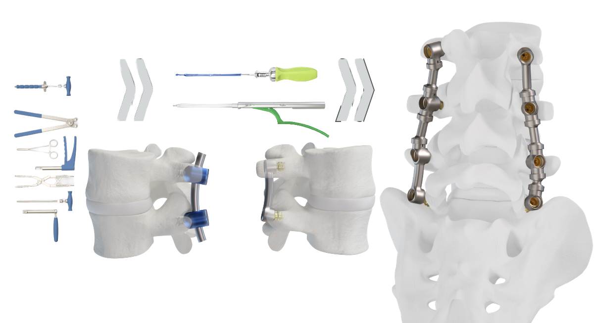

Multi-Level Capability
Expand the system beyond short constructs without creating a bulky or difficult-to-assemble implant.
Orthopedic Product Development
Extending a compact spinal fixation technology into a versatile multi-level system while preserving its advantages in strength, size, procedural speed, and ease of installation.

Project Snapshot
Industry
Orthopedic Medical Devices
Product
PressON Multi-Level
Development Scope
Requirements Through Market Readiness
Development Time
One Year
The Opportunity
The original PressON spinal stabilization technology introduced a fundamentally different approach to posterior fixation. Its compact construction offered the potential for a smaller implant, greater strength, faster installation, and fewer procedural steps than conventional systems.
Its principal limitation was anatomical range. The original configuration was best suited to stabilization across one or two vertebral levels, limiting its use in procedures requiring longer constructs.
The next-generation challenge was therefore not simply to make the system longer. The new product had to support multi-level stabilization while remaining smaller, stronger, faster, and easier to install than competing technologies.
At the same time, the product family needed surgical techniques and instrumentation that supported both open and less-invasive percutaneous procedures.
Design Objectives
Expand the system beyond short constructs without creating a bulky or difficult-to-assemble implant.
Meet applicable FDA verification requirements while pursuing performance beyond competing systems.
Reduce installation complexity, instrumentation, and operating-room time.
Develop implant and instrument concepts suitable for percutaneous placement through smaller access paths.
Identify manufacturers capable of producing complex designs using processes including additively manufactured titanium.
Control manufacturing cost sufficiently to support competitive market pricing.
My Role
I was responsible for developing the PressON Multi-Level system from foundational design requirements through a market-ready product supported by a manufacturing supply chain.
The assignment included mechanical design of the implant components, development of the instruments required for implantation, supplier selection, prototype development, design refinement, verification and validation testing, and preparation for manufacturing.
Because implant performance and surgical technique are inseparable, I worked closely with surgeons throughout development. Their feedback helped determine how the components would be positioned, manipulated, assembled, and verified during a procedure.
I also coordinated with multiple prospective manufacturers to identify suppliers capable of producing the required geometries, materials, tolerances, surface conditions, and production volumes at commercially sustainable costs.
From initial requirements through the completed suite of implants and surgical tools, the development effort was completed in approximately one year.
Development Workflow
Define strength, size, procedural, regulatory, and commercial objectives.
Generate implant and instrument concepts for multi-level fixation.
Evaluate procedural sequence, access, handling, and ease of installation.
Assess manufacturing methods, capability, quality, lead time, and cost.
Build and refine implants and instruments based on technical and clinical feedback.
Demonstrate strength, fatigue performance, dimensional compliance, and functional performance.
Establish production suppliers, documentation, and the complete surgical tool suite.
Integrated Product Development
Developed compact multi-level fixation components intended to preserve the mechanical advantages of the original technology.
Designed the tools required to position, assemble, secure, and verify the implant during surgery.
Supported development of a less-invasive procedural approach for both the original and multi-level systems.
Translated clinical feedback into changes to geometry, instrument access, procedural sequence, and usability.
Evaluated potential manufacturers and matched design requirements with advanced production capabilities.
Established and executed testing intended to satisfy regulatory requirements and demonstrate competitive performance.
Critical Tradeoffs
Reduce tissue disruption and implant volume.
Maintain adequate load capacity and fatigue life across longer constructs.
Reduce installation steps and surgical time.
Ensure the surgeon could consistently position and secure each component.
Use advanced design and manufacturing freedom.
Keep the complete system commercially viable.
Work through a constrained surgical corridor.
Provide adequate control, tactile feedback, and procedural simplicity.
Project Outcome
The completed development effort produced the PressON Multi-Level system, supporting longer spinal constructs while retaining the product family’s core emphasis on smaller size, faster installation, and high structural strength.
The project included the implant components, associated surgical instruments, procedural development, verification and validation activities, and an established manufacturing supply chain.
By treating implant geometry, surgical technique, instrumentation, manufacturing, testing, and cost as a single integrated design problem, the system progressed from basic requirements to a market-ready product within approximately twelve months.
Engineering Reflection
A medical implant is not an isolated piece of hardware. Its success depends on the interaction between anatomy, implant mechanics, surgical technique, instrumentation, manufacturing, regulatory evidence, and the surgeon’s experience. Developing all of those elements together was essential to preserving the advantages of the original technology while expanding its clinical usefulness.
Public Product Information
Nexus Spine publicly describes the PressON platform as smaller, faster, and stronger, with support for open, mini-open, Wiltse, percutaneous, and cortical surgical approaches. The company also identifies elimination of rod bending as a feature of the multi-level system.
View the Nexus Spine product pageThis case study combines publicly available product information with a general description of my development responsibilities. Proprietary design details, controlled drawings, test results, patient information, and confidential manufacturing information have been intentionally excluded.